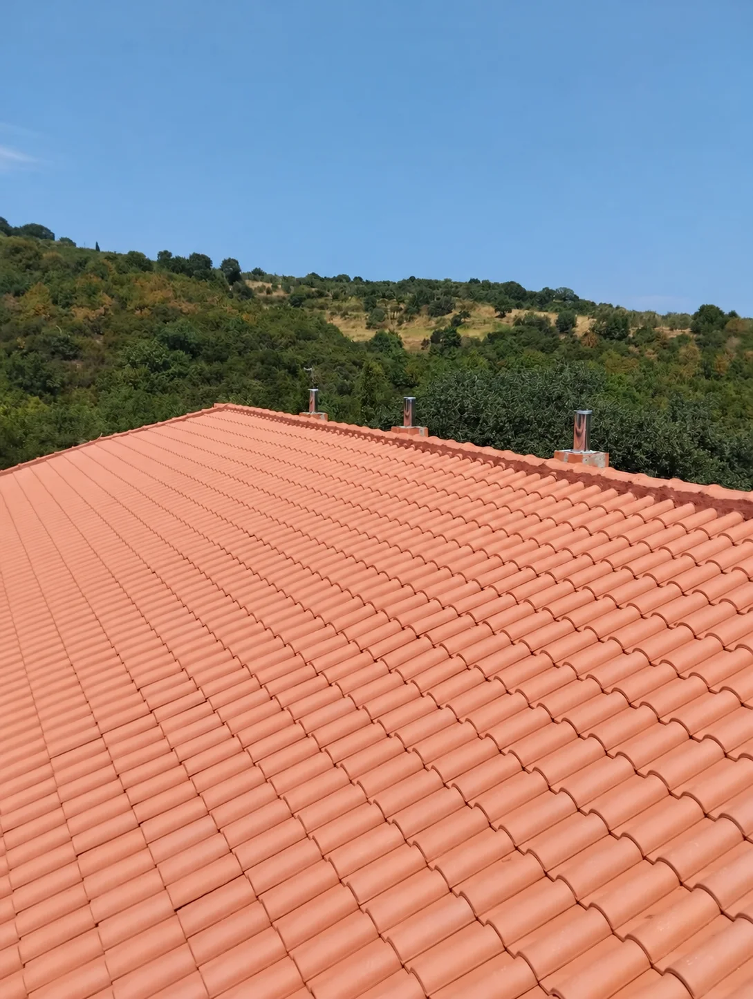
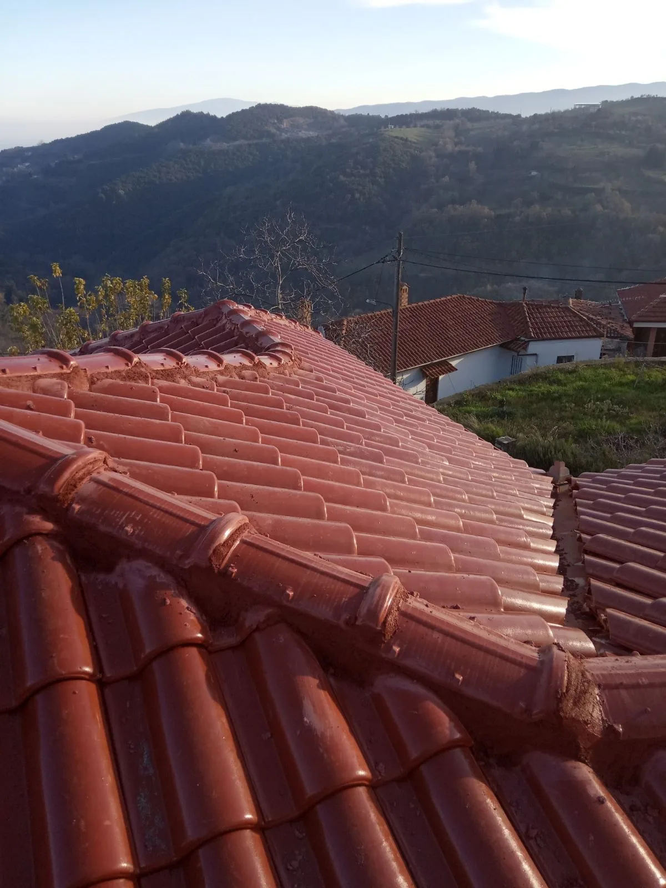
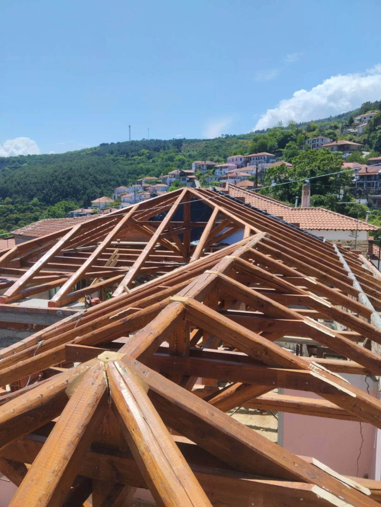
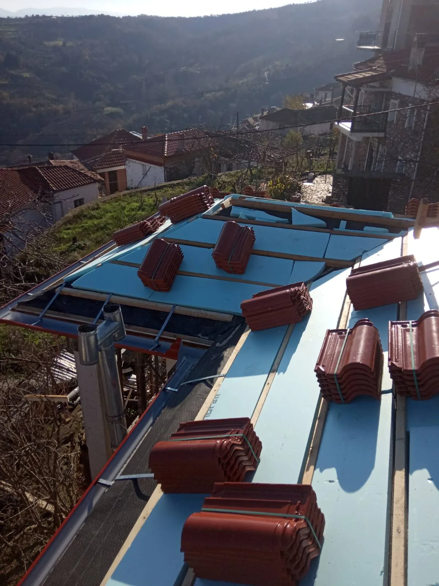
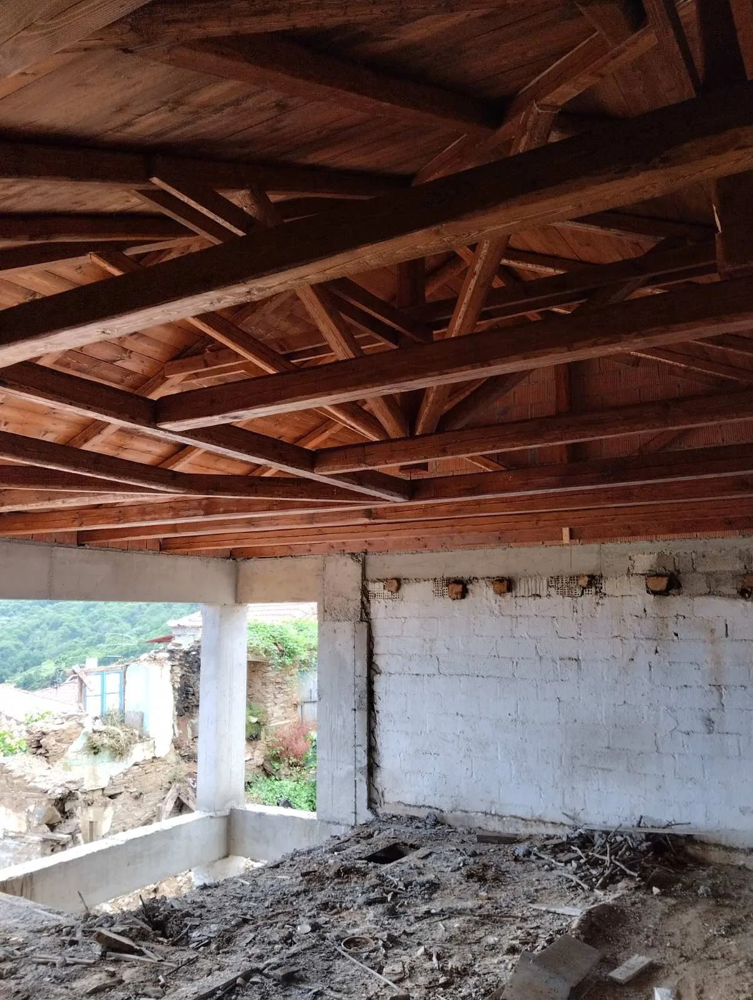
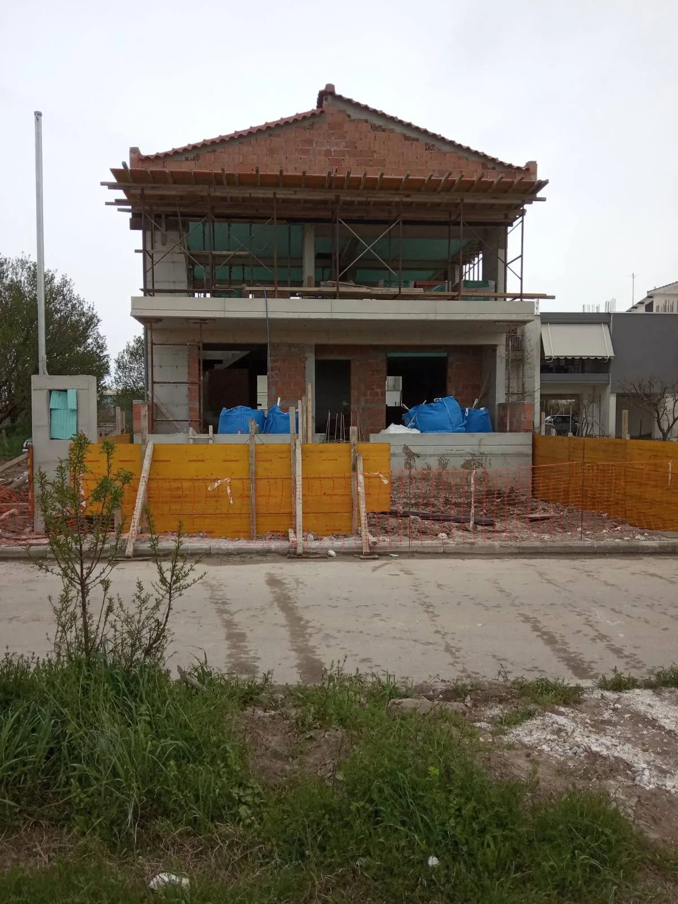
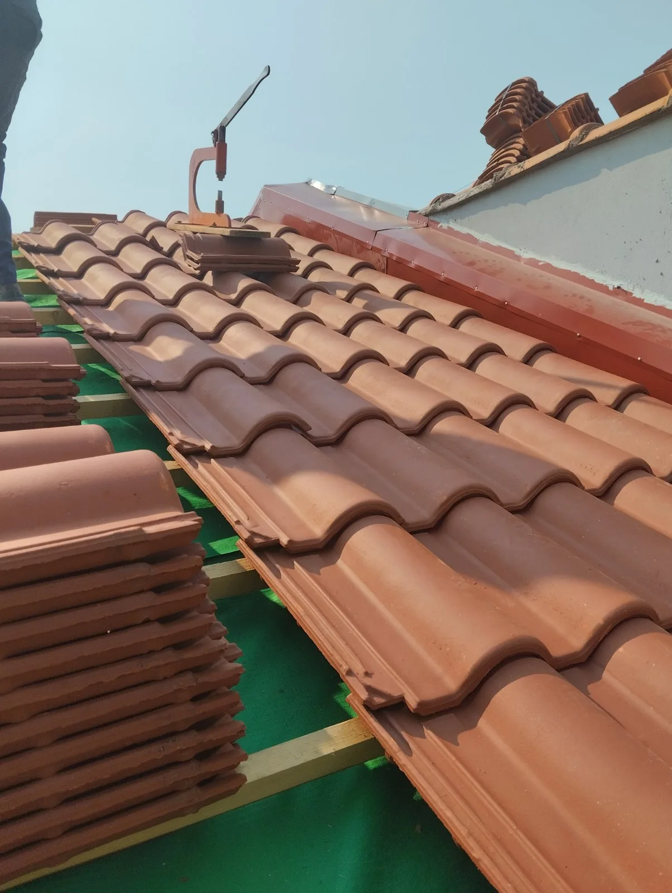
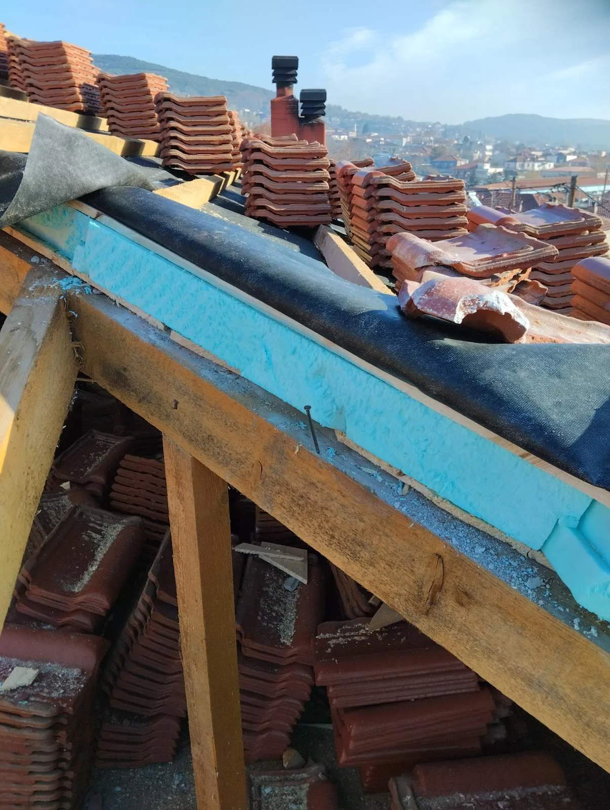
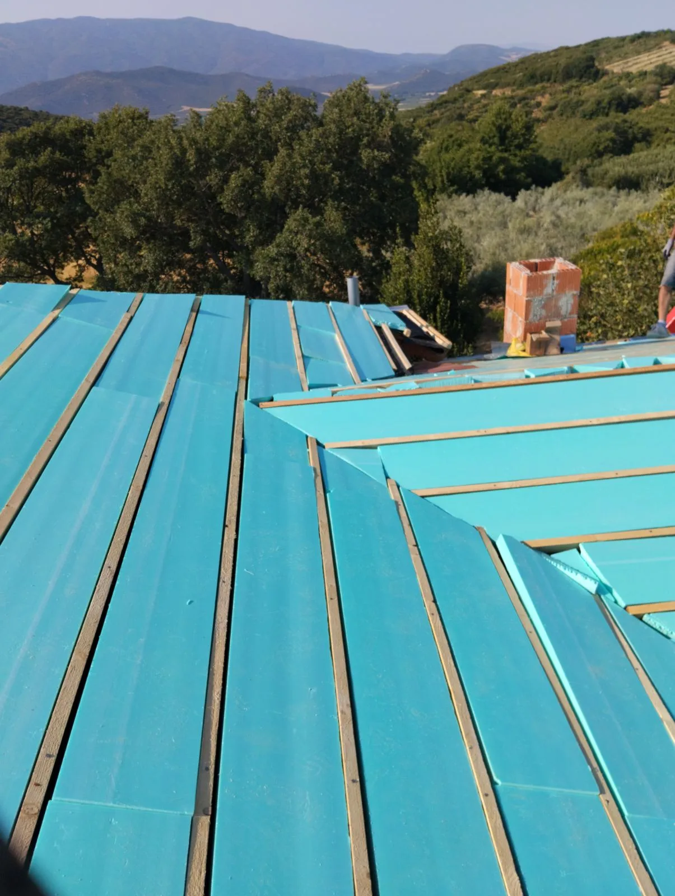
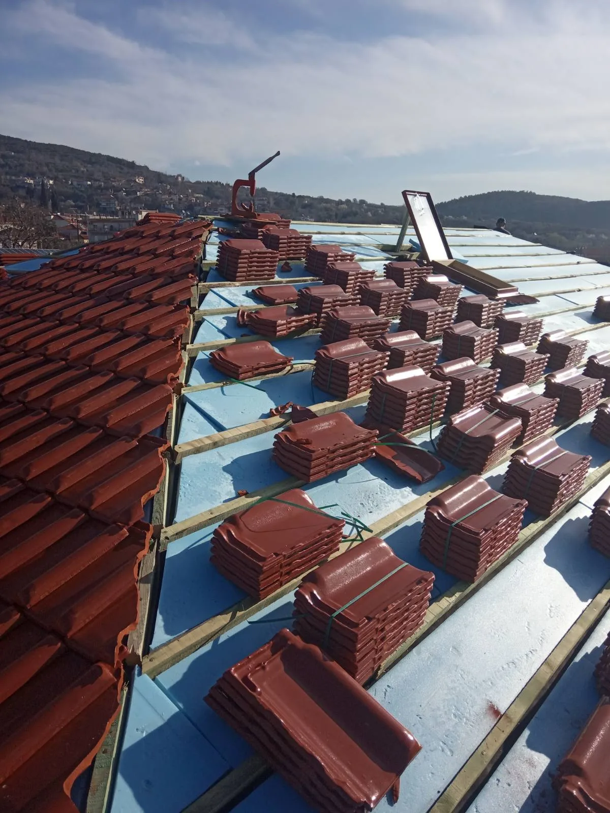

Κατασκευή & επισκευή σκεπών
Κεραμοσκεπές, σοφίτες και επισκευές σε υπάρχουσες στέγες.
Αγιά Λάρισας · Σκεπές και οικοδομικές εργασίες
Αναλαμβάνουμε κατασκευή και επισκευή σκεπών, κεραμοσκεπές, κτισίματα, καλούπια και εργασίες με μπετόν. Με έδρα την Αγιά Λάρισας, εξυπηρετούμε όλο τον Δήμο Αγιάς.
Ζητήστε προσφορά
ΟΙ ΕΡΓΑΣΙΕΣ ΜΑΣ
Εργασίες σε κατοικίες και επαγγελματικούς χώρους στην Αγιά και στους οικισμούς του Δήμου.
Κεραμοσκεπές, σοφίτες και επισκευές σε υπάρχουσες στέγες.
Χτισίματα για νέες κατασκευές και εργασίες σε υπάρχοντα κτίρια.
Εργασίες με καλούπια και μπετόν για οικοδομικά έργα.
ΕΡΓΑ ΜΑΣ
Φωτογραφίες από στέγες και στάδια κατασκευής.









ΕΠΙΚΟΙΝΩΝΙΑ
Έδρα: Αγιά Λάρισας · Εξυπηρέτηση σε όλο τον Δήμο Αγιάς
tasosvoulgaris78@gmail.com